Conceito e Premissa
O Reino de Véspera
Arcane Dead coloca o jogador no papel dos últimos três arcanistas de Véspera após o rompimento dos selos primordiais: a Chama, a Geada e a Pestilência.
Projetado com uma biblioteca central desacoplada em C# .NET 8, o jogo foi construído para funcionar de maneira agnóstica a interface, suportando execução tanto no Terminal de Console quanto no Navegador Web 2D.
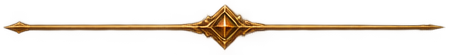
Pilares de Inspiração e Referências de Game Design
Darkest Dungeon
Atmosfera fúnebre opressiva, punição severa de estados alterados contínuos e peso em cada decisão estratégica.
Slay the Spire
Combate em turnos altamente legível, telegrafia visual clara das ações inimigas e sinergia de atributos e relíquias.
Diablo & Dark Fantasy
Estética gótica medieval, selos arcanos corrompidos, grimórios ancestrais e batalhas marcantes contra chefes de rota.
Vampire Survivors
Progressão rápida de poder, evolução exponencial de feitiços e sentimento constante de sobrevivência contra hordas.
Identidade Visual & Estética
A estética de Arcane Dead foi construída para evocar um antigo grimório de feitiçaria sombria. Cada elemento cromático possui função narrativa e mecânica: tons abissais para o reino dos mortos, roxo para a corrupção do véu e ouro antigo para a centelha de magia pura.
Paleta Cromática Oficial (Clique em Qualquer Cor para Copiar o Código HEX)
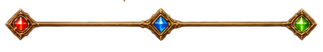
Os Três Magos & Suas Afinidades Elementais (Passe o Mouse nos Cards)
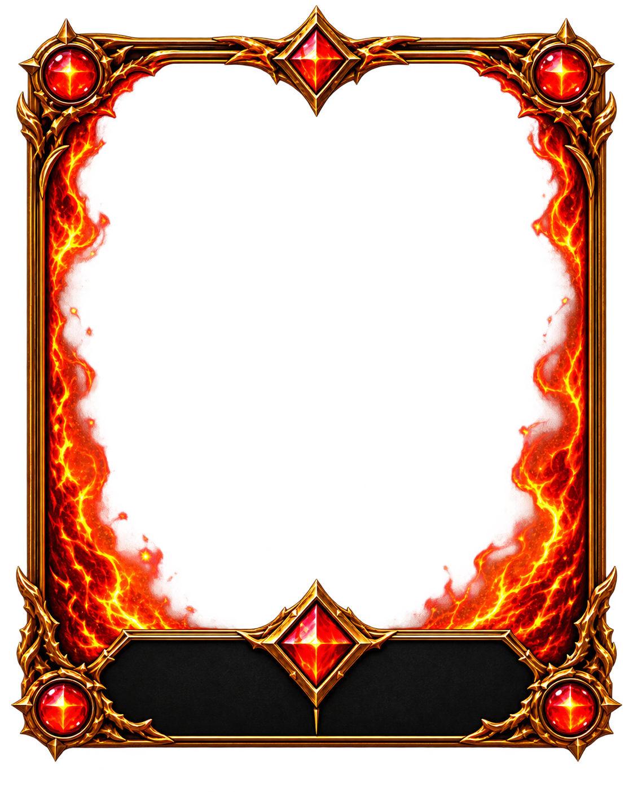
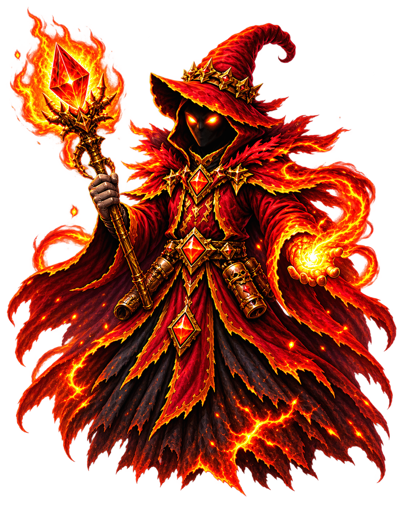
IGNIS
- Estilo: Dano massivo direto e Queimadura.
- Passiva: Intensidade da Chama (+dano com vida baixa).
- Arsenal: Faísca, Chama Crescente, Manto de Brasas, Inferno Arcano.
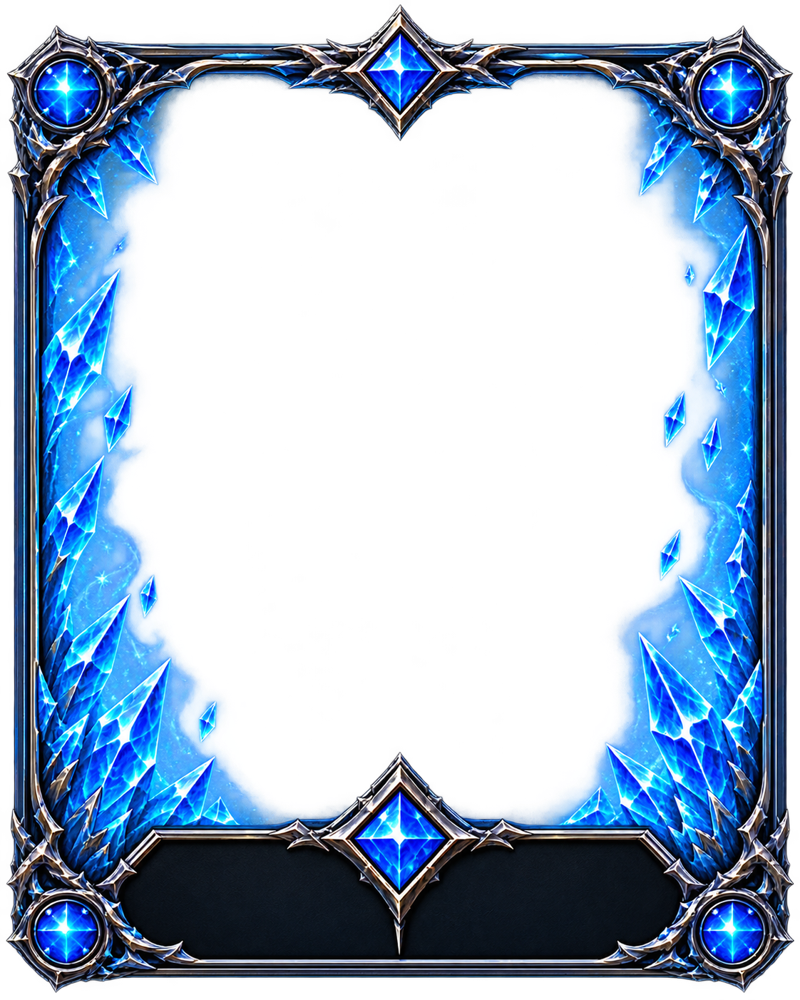
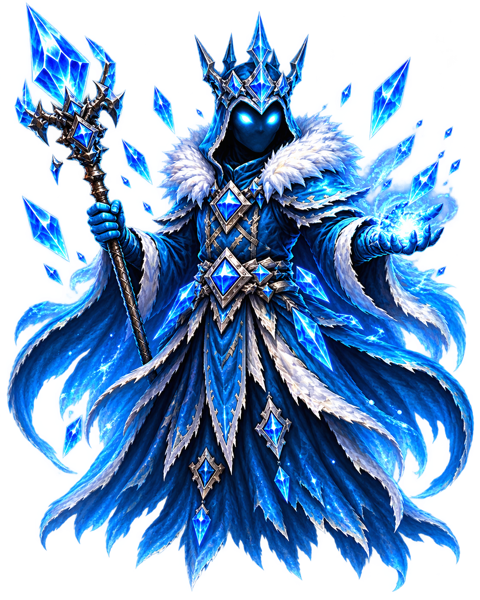
NIVOR
- Estilo: Controle de grupo, barreiras e Congelamento.
- Passiva: Espessura do Gelo (+armadura acumulativa).
- Arsenal: Estilhaço de Gelo, Prisão Glacial, Barreira, Zero Absoluto.
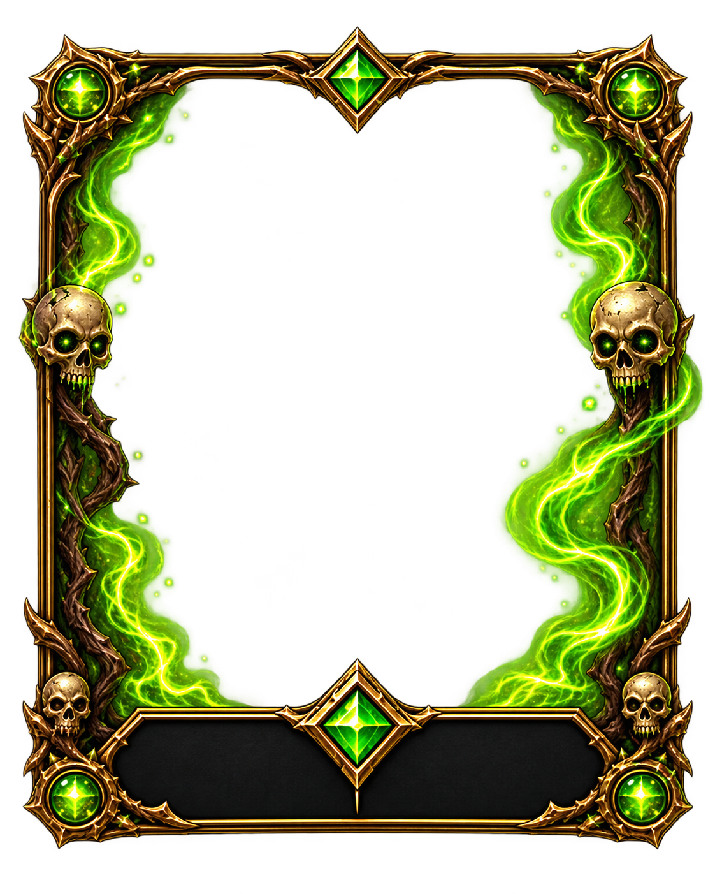
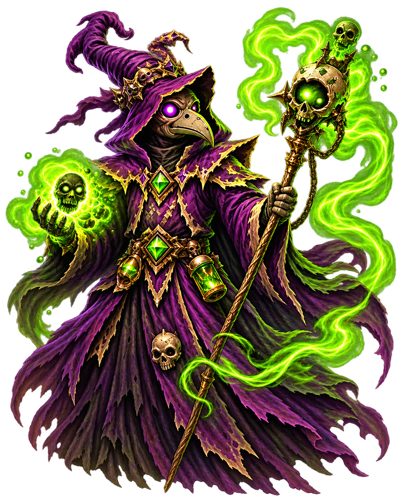
MORTIS
- Estilo: Dreno vital, Veneno e debuffs contínuos.
- Passiva: Carga Necrótica (+poder pelos status do alvo).
- Arsenal: Toque Pútrido, Nuvem Tóxica, Pacto Fúnebre, Colheita.
Grimório Arcano · Inspeção de Feitiços
Os Três Chefes de Rota & Ambientações
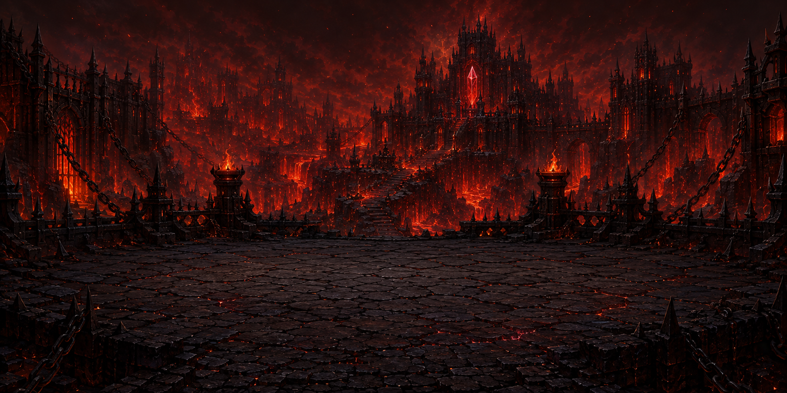
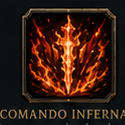
General de Cinzas
Rota da Chama · Forja RubraColosso couraçado em placas de magma que entra em frenesi explosivo ao cair abaixo de 50% de HP.
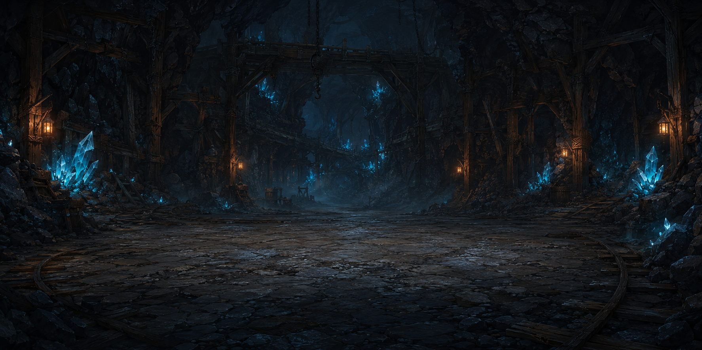
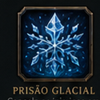
Vigia Congelado
Rota da Geada · Mina de CristalEntidade ancestral de gelo que congela a arena de combate e invoca estalactites perfurantes.
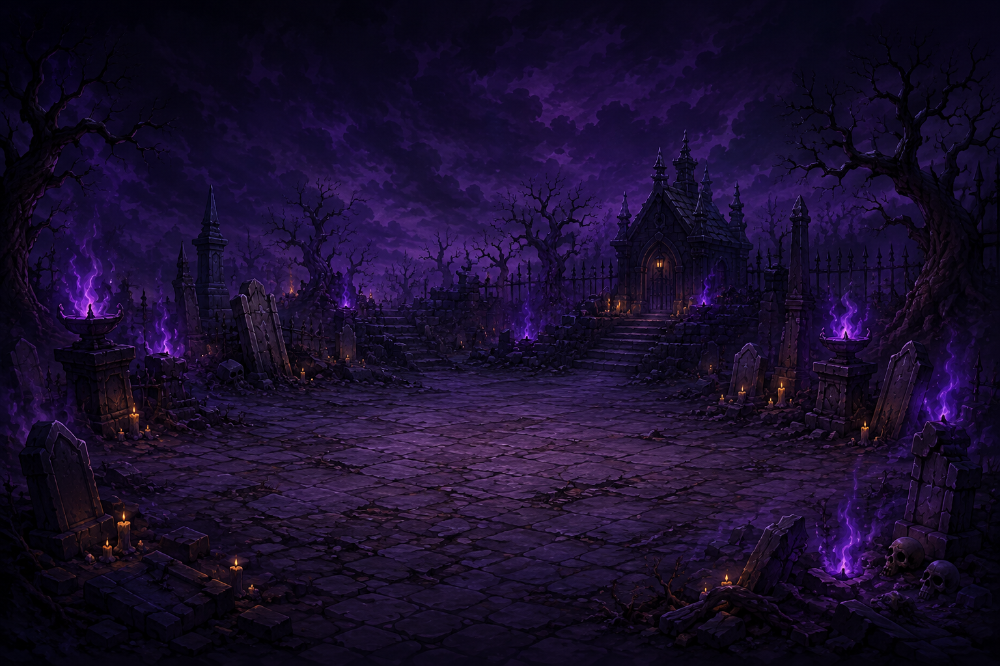
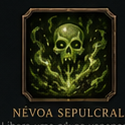
Colosso Decomposto
Rota da Pestilência · Cemitério TorcidoAmálgama de ossos e miasma tóxico que infecta o conjurador com veneno acumulativo e drena sua vida.
Desafio de Design: Coerência Visual Multiplataforma
O principal desafio visual do projeto foi manter a mesma atmosfera sombria entre três interfaces completamente distintas: no Terminal de Console (utilizando paleta ANSI de 24-bit e molduras Unicode), no Windows Forms (layouts GDI+ com resolução nativa) e no Navegador Web (spritesheets animados e efeitos de partículas). O jogador experimenta a mesma identidade visual independente da plataforma.
Mecânicas de Combate & Exploração
Triângulo Elemental
Fogo supera Pestilência (1.5x), Pestilência supera Geada (1.5x) e Geada supera Fogo (1.5x). Se o elemento for desfavorável, o dano cai para 0.75x.
Estados Alterados
Efeitos de status dinâmicos: Queimadura (dano direto por turno), Congelamento (perda do turno de ação) e Veneno (dano cumulativo progressivo).
Passivas de Herói
Lógica própria para cada mago: Ignis ganha dano em estado crítico, Nivor ergue armadura ao defender e Mortis potencializa seus feitiços pelos debuffs do alvo.
Transição de Fases
Ao atingir menos de 50% de HP, o chefe entra em modo de fúria, alterando o padrão da árvore de decisão da IA e telegrafando ataques em área devastadores.
Roda Elemental Interativa · Matriz de Fraquezas
Selecione o elemento do Conjurador e do Alvo para simular o multiplicador de dano e os status aplicados.
Rotas & Exploração de Mapa em Grade
Arquitetura de Domínio & POO
Decisão de Engenharia: Foco e Balanceamento de Escopo
O documento inicial previa 11 mapas procedurais. A decisão de consolidar o escopo em 3 rotas completas, balanceadas e com identidade única (Cemitério, Mina e Forja) garantiu que cada rota tivesse arte dedicada, mecânicas polidas e estabilidade absoluta no motor de combate.
Processo de Desenvolvimento & Desafios
Um relato técnico transparente sobre o fluxo de trabalho do grupo, os obstáculos enfrentados durante a integração multiplataforma e os aprendizados consolidados.
- Desacoplamento em Camadas: A biblioteca central
ArcaneDead.Corepermitiu o desenvolvimento simultâneo da interface Web e do motor de console sem conflitos de merge. - Ciclo de Fraquezas Balanceado: A matriz elemental triangular eliminou estratégias dominantes e incentivou a alternância de magos.
- Versionamento no Git: Estrutura de branches por funcionalidade manteve a integridade do código durante todo o ciclo.
- Sincronização de Turnos Assíncronos: O motor de console operava de forma síncrona, enquanto a interface Web exigia animações e tempos de resposta assíncronos.
- Mapeamento de Spritesheets: Ajustar frames de ataque, conjuração e impacto com precisão de pixels demandou refatoração nos renderizadores.
- Cumulatividade de Status: Tratar interações complexas de múltiplos efeitos de estado simultâneos (ex: Queimadura + Congelamento) exigiu testes unitários dedicados.
- Árvore de Talentos Permanentes: Sistema de progressão meta-game com desbloqueio de passivas entre tentativas.
- Nova Classe (Mago do Véu): Quarto arcanista com elemento neutro e feitiços de distorção temporal.
- Modo Cooperativo Local: Suporte a batalhas em dupla compartilhando a mesma reserva de mana.
Integrantes do Projeto
Gabriel
Engenharia de combate, lógica de dano elemental, balanceamento numérico e testes de regras.
Alex Eduardo
Arquitetura em camadas, interface Web 2D, renderização de sprites e integração do motor assíncrono.
Gabriel
Estrutura de dados, hierarquia de classes, sistema de estados alterados e documentação técnica.
Repositório Oficial do Arcane Dead
Código-fonte completo em C# .NET 8, documentação de arquitetura, GDD, diagramas de classe em Mermaid e executáveis prontos para execução.